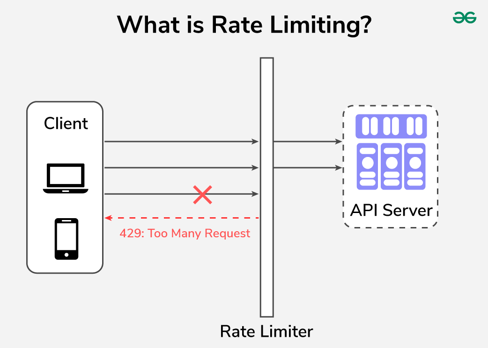
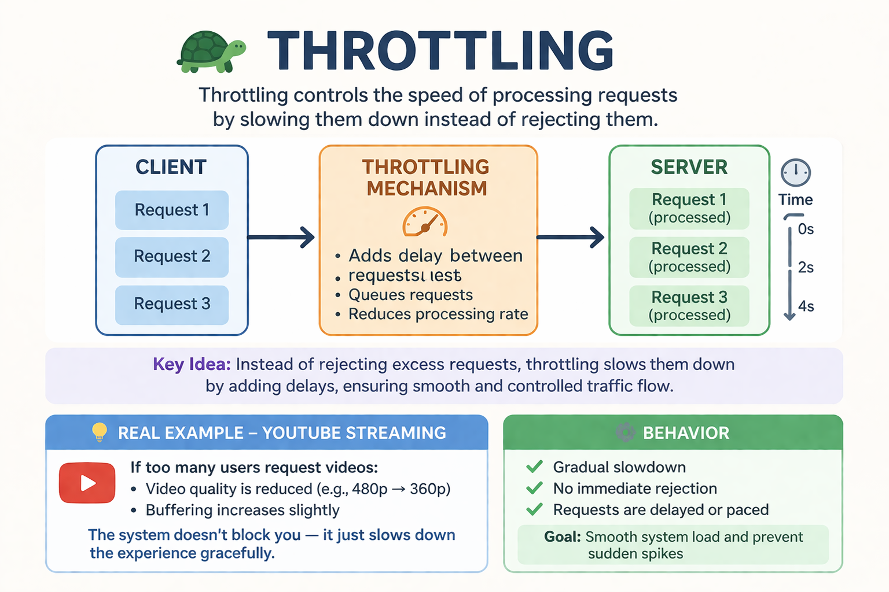
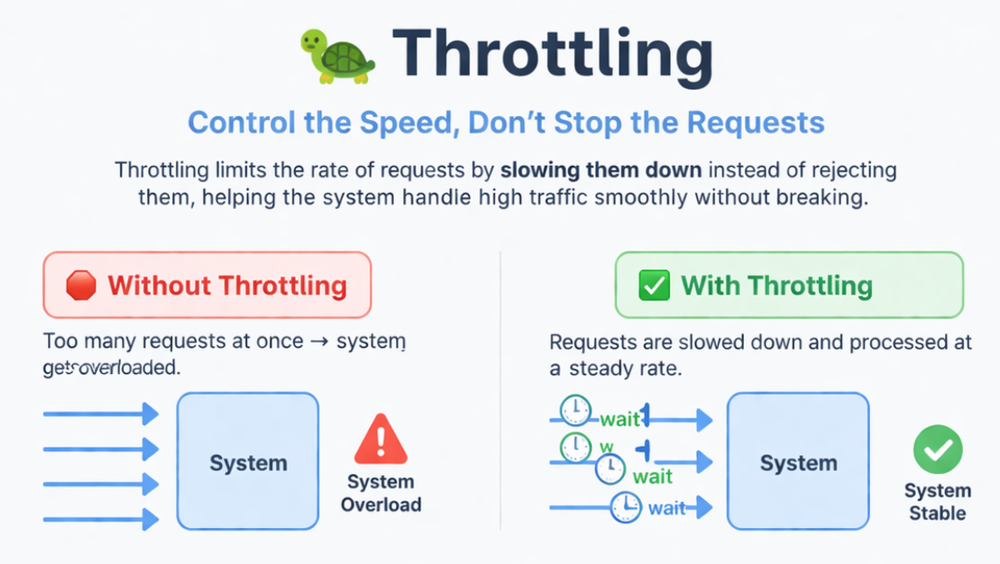

System Design Mastery
Master scalable systems with premium insights
🚦 Rate Limiting vs Throttling
📚 Quick Navigation
1️⃣ What is Rate Limiting?
Rate Limiting means: Restricting the number of requests a client can make within a fixed time window.
📌 Example:
- 100 requests per minute
- If requests are exceeded → Request is rejected ❌
- Server returns: HTTP 429 Too Many Requests
🎯 Goal: Protect Server

🚫 How rate limiting blocks excess requests
🛡️ Why it exists
Rate limiting protects:
- Servers from overload
- APIs from abuse
- Systems from DDoS attacks
📊 Example Scenario
API allows: 100 requests per minute
- If user sends 100 requests → allowed ✅
- 101st request → rejected ❌ (HTTP 429)
2️⃣ What is Throttling?
Throttling means: Controlling or slowing down the rate of requests instead of rejecting them.
🔄 Instead of blocking:
System allows requests but:
- Adds delay
- Slows response
- Queues requests

🐌 How throttling slows down request processing
🎯 Why it exists
Throttling ensures:
- Smooth traffic handling
- Fair usage
- Better user experience during spikes
📺 Real Example (YouTube / Streaming)
If too many requests:
- Video quality reduced
- Buffering increases
- System doesn't block — it slows you
⚡ Key Difference
⚖️ Comparison Table
| Feature | Rate Limiting 🚫 | Throttling 🐌 |
|---|---|---|
| Behavior | Reject requests | Slow down requests |
| Goal | Prevent server overload | Smooth traffic and avoid sudden spikes |
| Response | Error (429) | Delay / queue |
3️⃣ Real-world Analogy
🚧 Rate Limiting = Gate closed
- Only 100 people allowed
- Extra people → blocked ❌
🚦 Throttling = Traffic signal
- Everyone allowed
- But flow is controlled slowly
4️⃣ When to Use Each
✅ Use Rate Limiting:
- Public APIs
- Prevent abuse
- Protect backend systems
- Security enforcement
✅ Use Throttling:
- Handling traffic spikes
- Background processing
- Graceful degradation
- Improving system stability

📊 Choosing between rate limiting and throttling based on use case
5️⃣ Common Mistake
🚨 Thinking they are the same
They are related but different:
- Rate limiting = hard stop
- Throttling = soft control
6️⃣ Real App Connection
🛒 E-commerce
- Rate limiting → prevent bots placing orders
- Throttling → slow down traffic during sale
💳 Payment System
- Rate limiting → prevent fraud attempts
- Throttling → manage peak load
🎯 Interview-ready One-liner
Rate limiting restricts the number of requests by rejecting excess traffic, while throttling controls the request rate by slowing down processing instead of rejecting requests.
🧠 Summary
- Rate limiting enforces a hard cap on request count, rejecting if requests beyond a limit.
- Throttling controls request flow by delaying or slowing down processing.
- Rate limiting protects systems, while throttling ensures smooth performance under load.